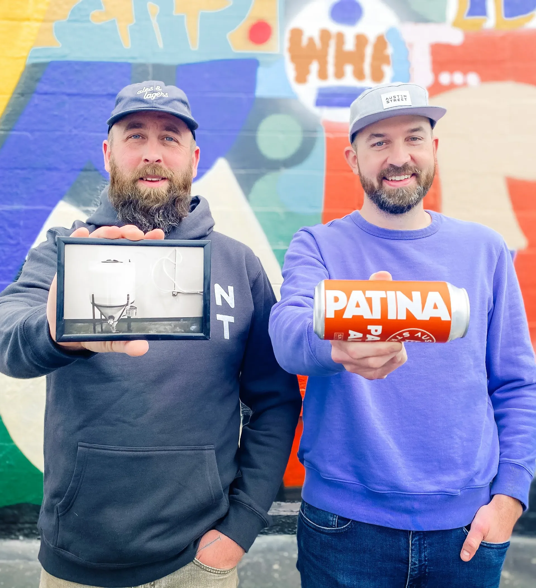

2013Year Zero
A homebrew setup on Austin Street, Westbrook.
Will Fisher and his co-founder pool savings, buy a one-barrel system, and start brewing in a garage. No outside investment. No business plan, really. Just a conviction that Maine needed a great brewery.

Westbrook, ME · 2013